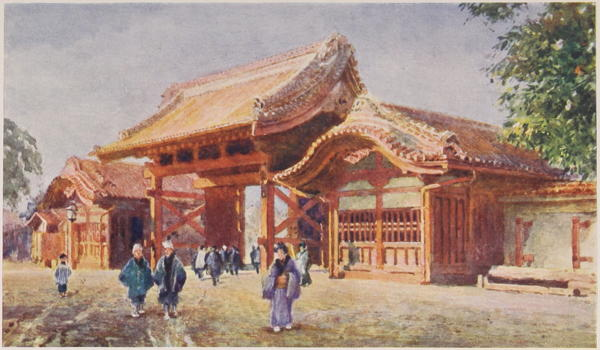

“The red gate of the Imperial University, Tokyo”
Every-day Japan (1909)
The governor [of Kyoto] was good enough to take us ... to the “Jiogakko,” or female normal school, established under the auspices of the local government, and in a certain degree under the care of the imperial government. In connection with this school is the “Jiokoba,” or female industrial establishment. ... The first-named institution, founded in 1871, is formed with five classes, of which the fifth is the lowest; but at present only the three lower classes have pupils. The object of this school is stated to be to make girls fit to become good mothers. They must be thirteen years of age before they can enter, and must pass through a class in six months, undergoing minor examinations monthly, and general examinations in the presence of the governor of Kioto every six months. Some of the students are taught the English language. Boarding in the school is encouraged, the charge for maintenance (food only) being one and a half yen per month (!), the Japanese paper yen being at present about three shillings in value. There is a vacation for the month of August. The subjects taught are those usual in elementary schools, with algebra, geometry, higher arithmetic; also English grammar and composition in the upper classes. But in addition to the book-learning imparted, the girls receive a very practical education in the duties of daily life. They are taught how to dress, to wait at meals, to receive, salute and entertain guests; to make tea ceremonial fashion, and to give and take it; to dispose flowers in vases; to hang pictures; to snuff the candles generally employed in all households at present; to dust rooms; to eat the larger fruits of the country (melons, etc.); to make offerings to the gods, and so forth. In the other school, or industrial establishment for girls, there are six classes, in which the instruction is chiefly in the various kinds of needle-work and weaving. In the lowest class the girls are taught plain needle-work; in the next, plain weaving of cotton, with advanced needle-work; in the next, the weaving of cotton with patterns, the rearing of silkworms, and the mode of making the broad girdles which form so striking a part of the female costume in Japan; in the third class, the weaving of silk with cotton, the making up of the tobacco pouches (which are in universal use throughout the country), and the making of plain dresses are taught; in the second, the weaving of silk with patterns, and the making of dolls’ dresses, foreign dresses, and silk coats; and in the first class the girls are practised in every kind of silk-weaving, and in the making of lace, of dancing dresses, and of ceremonial dresses. The pretty and useful art of composing pictures of silk cut out into suitable designs, and pasted upon a groundwork of cardboard, is also taught, and taught very successfully, in this class.* There are at present one hundred and nine students in the Jiogakko, and one hundred and ninety-six in the Jiokoba. ...
Another deeply interesting educational establishment which we visited the same day is a female school of industry, where dancing-girls, geishas, and other such young females can receive some elementary instruction, and be taught the domestic arts which are necessary to wives and mothers. Until this kind of institution was started, this class of girls in Japan, and especially in great cities like Kioto, were in a very unfortunate position. Highly educated in the arts of dancing, singing, and waiting at meals on men, their education in other respects was quite neglected, and consequently the ordinary avocations of respectable life, and especially of married life, were closed to them, or open only under the gravest disadvantages. They not unfrequently married well, I am told, but they were usually very unfit for their new duties in such cases. Under the present régime of Japan, and with the greater respect which is now becoming felt not only for the women but for the men also of the trading and poorer classes, the neglect of this large class of young women and mere girls has been so much deplored that schools of industry, expressly designed to fill up their spare time with instruction in matters that wives and mothers should understand, have been established in different parts of the city, and receive the cheerful support and assistance of the government. We found a number of geishas and dancing-girls busily occupied, in the interval of their usual occupation, in receiving instruction in elementary knowledge, and especially in the use of the scissors and needle. The interest which is taken in these institutions by the governor, from whom the proposal to make the visit proceeded, is a good omen for their permanent success, until superseded, let us hope, by a wholly improved method of employing the maidens of Japan.
*Two pretty specimens of this class of art were presented to my son and myself.
Japan: Its History, Traditions, and Religions (1880)
The [Imperial College of Engineering] was established in 1873, under the orders of the Minister of Public Works, with a view to the education of engineers for service in the Department of Public Works. Admission is obtained by competitive examination, for which all Japanese students under the age of twenty, and of good moral character, are eligible. This entrance examination includes the following subjects:—Chinese-Japanese, Japanese-English, and English-Japanese translation, writing to dictation, English grammar and composition, arithmetic, geography, elementary geometry, and elementary algebra. ... The course of training extends over six years—two in general literature and science (English language and literature, mechanical drawing, pure and applied mathematics, natural philosophy, and general chemistry), two in technical science in some selected branch, and two in applied science. Until recently (when some Japanese were added to the teaching staff) all the instruction was imparted in the English language, the foreign professors and instructors being exclusively British.
The Land of the Morning (1882)
This afternoon we were taken to the Female Model School [in Kyoto], to see Japanese maidens in comfortable, well-aired rooms, cultivating their minds and their fingers in an entirely satisfactory manner. It was difficult to remember that we were in Asia among heathen women, as we listened to Japanese girls reading English with pretty lisping accent out of School Board ‘Reading Lessons.’ The only non-native official was the American mistress who superintended the English teaching. We passed on through large class rooms (there are 250 girls in the school), where, sitting on the matted floor, Japanese damsels were at needlework, making their own clothes, or busy at embroidery. All looked bright and happy and pleased to see us. One young lady, seeing me amused by the finger-cushions worn as thimbles, got up from the further end of the room and shyly offered some specimens of them made by herself. Pictures, illustrating moral virtues, hung round the room; ‘that they may learn with their eyes as well as with their fingers,’ said the Japanese superintendent in very good English. We pointed to the portrait of a national hero, and asked what feminine virtue he was supposed to illustrate? ‘Ah, that is to teach them the folly and wickedness of suicide; had his mother killed herself the country would not have been adorned by his valour.’ It seemed strange that the happy looking young girls round us should need to be dissuaded from suicide on the grounds of patriotism—yet so it too often is. If anything goes wrong these light-hearted Japanese fill the sleeves of their kimonas with stones and throw themselves into the nearest pond.
‘Local female examinations’ were going on: five young ladies seated at a desk were engaged in finding the cube root of a long line of figures chalked up on a black board behind the native examiner. In the next room, the natural philosophy class were writing out their papers, the inspector having given them a question respecting the air-pump to answer. This was merely the half-yearly school examination; there was no audience. We came in quite unexpectedly on the dozen or so of girls, aged from fourteen to seventeen, in each room, and we did not remain long enough to interrupt their studies; but we were curious to know whether the young ladies really understood what they were being taught. So, turning over the leaves of the examiner’s book, I came on the picture of a balloon (the book was in Chinese characters), and asked the inspector to request a pretty girl I pointed to, to explain what caused a balloon to rise? She thought for a few moments, then rose up at her desk, and answered through the interpreter, that ‘the gas with which the balloon was filled being lighter than the outer air caused it to rise;’ and went on, so modestly and prettily, to explain the action of hydrogen. But at this stage of the proceedings, being satisfied that this scientific education was a reality—the girl had answered entirely out of her own head, and I had chosen the subject at random—we thought it just as well for our scientific fame not to follow these Turanian damsels into deeper subjects.
Journal of a Lady’s Travels Round the World (1883)
In the afternoon my brother took us to see the great Keiogijiku College and University (pronounced Kay-o-ghee-gee-koo). It is in the district of Mita, and not very far from S. Andrew’s House. Its pupils, 1600 in number, from little fellows of eight or nine to full-grown men of twenty-three, come from every part of Japan, and in the University Department the senior students can graduate as fully as in the Imperial University. They not only stand on very much the same level as University students, but as regards social position, they rank, if anything, higher. The Keiogijiku University Department has only been recently established, and is mainly intended for the scholars of the College to pass into, in order to complete their studies. It, however, differs from the Imperial University in two ways: (1) it is not endowed; (2) the pupils are less likely to receive Government appointments. Both University and College were founded by Mr. Fukuzawa, one of the men who made modern Japan. ...
The Keiogijiku ... is a group of modern red brick buildings surrounded by a large playground, in which we saw a number of students being drilled. The seniors were in the charge of a sergeant; but the juniors, in small companies of ten or twelve, were being ordered about by boys of their own age—a proceeding rather difficult to imagine in an English school, but evidently very successful in Japan.
The larger number of students live in boarding houses close to the College. They come, as we said before, from every part of the Empire, quiet country villages often collecting a fund to send up a promising boy to Tokyo. Should, however, supplies from home be cut off, it is very unlikely these boys will give up their course, for they are possessed of an energy and enthusiasm for knowledge that seems to know no bounds. They are in every sense representative of the active life of modern Japan, not of the small clique of nobles who have lived in more or less retirement since the Restoration, nor of the peasants, with their slower intelligence; but of the samurai (the scholars and soldiers of the old régime), and the farmers, who together form the powerful middle class of the present Empire.
It is scarcely surprising, therefore, that Mr. Moore was able to tell us of one boy who pulled a jinriksha each evening, and of another who sold newspapers daily from 4 to 7 a.m., in order to earn the necessary school fees.
Japan As We Saw It (Bickersteth) (1893)
Mr. Moore took us to visit the Imperial University. It is built in the grounds of the former daimyo of Kaga, in a district of the city called Kanda, five miles from S. Andrew’s House. The buildings, all in modern style, cover a large extent of ground, and include separate colleges for law, medicine, architecture, engineering, literature, science, and agriculture. The students are about 700 in number, and live in boarding-houses outside the University grounds. They know nothing of college life as we understand the term in England, as they only visit the colleges for lectures, and never live in them. The University is a State institution, and claims the title of Imperial. It was founded by the Government in 1856, and its first name was “Place for the Examination of Barbarian Writings;” but seven years later this was changed to the “Place for Developing and Completing”—a curious witness ... to the progress of Japanese thought during the interval.
Professor Dickson kindly showed us round every department, and gave us much valuable information about their working. He said that the medical and philosophical departments were in German hands, and the rest in English and American; but that many leading professors were now Japanese, foreigners being dispensed with as soon as possible.
The first attraction is the library, which has lecture rooms attached to it. The collection of books (seventeen thousand) is good; but as they were ordered promiscuously by various professors, they are greatly in need of organization by one mind; that is, if they are ever to become a living whole. From the library we went to the colleges for architecture, engineering, and science. It was very suggestive of the continued fascination of the West for Japan to see photographs and ground-plans of Italian buildings in the same room with “sections” of the Mikado’s new palace. And yet more so to find every modern development of engineering in a city whose inhabitants forty years ago had never seen a steamboat.
The Professor said that any missionary influence would have to be exercised from outside the University. It would be impossible to gain a place within the limits of its curriculum, as this excludes all direct religious instruction, even in Buddhism and Shintoism, Buddhism being only taught as a phase of philosophy. Nevertheless, it was encouraging to hear from him that there are a certain number of Christians among the students, who have formed a Young Men's Christian Association. It is managed with characteristic independence by themselves, all foreign influence being jealously excluded from it.
Japan As We Saw It (Bickersteth) (1893)
◀ SuicideJapanese language ▶